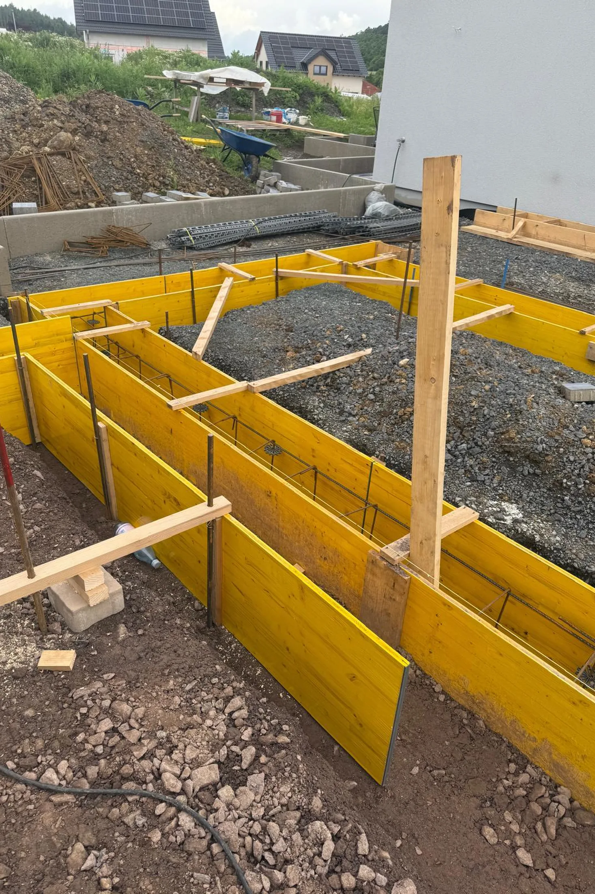

Vom Vorhaben zur belastbaren Projektanfrage.
Übermitteln Sie Auftraggeber, Bauaufgabe, Planungsstand, Standort, Zeitraum und vorhandene Unterlagen in einem geführten Ablauf. Pfeiler Bau erhält damit eine prüfbare Grundlage für Rückfragen, Besichtigung und Kapazitätseinschätzung.
Projektanfrage beginnenIn sechs Schritten zu einer prüfbaren Anfrage.
Der Navigator ersetzt kein Angebot und keine technische Planung. Er sorgt dafür, dass Pfeiler Bau Auftraggeber, Aufgabe, Planungsstand, Standort, Zeitraum und Unterlagen zusammenhängend prüfen kann.
- Auftraggeber einordnen
- Bauaufgabe auswählen
- Projektstand benennen
- Standort und Zeitraum erfassen
- Kontaktweg festlegen
- Unterlagen prüfen und senden
Was mit Ihrer Anfrage passiert.
Die Angaben werden nicht automatisch als Auftrag angenommen. Sie schaffen eine belastbare Grundlage für die fachliche und terminliche Prüfung.
Unterlagen prüfen
Leistungsbereich, Standort, Planung und erkennbare Schnittstellen werden eingeordnet.
01 · PrüfungRückfragen bündeln
Fehlende Angaben werden nicht häppchenweise, sondern möglichst gesammelt geklärt.
02 · AbstimmungNächsten Schritt festlegen
Je nach Projekt folgt eine telefonische Einordnung, ein Vor-Ort-Termin oder die Angebotsprüfung.
03 · Vorgehen